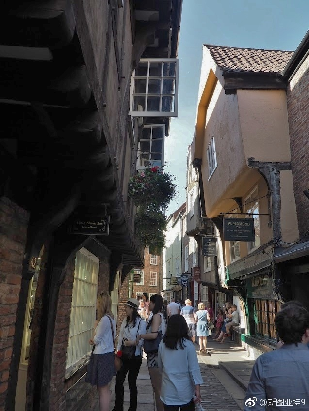

约克，历史上英国北部的重要城市，从罗马人到维京人到中世纪。这里反复提到的"The North"总让人经不住联想起《权力的游戏》。这里保留着一段古代城墙和城门（第一、二张），天主教大教堂（第三四五六张）以及中世纪街道肉铺街（第8张）。最后一张是克里福特塔，约克城堡仅存的遗迹。1190年，全约克的犹太人在这里被屠杀，是中世纪最大规模的排犹之一（网页链接）。（照片拍于6月17日）
 网页链接）。（照片拍于6月17日）
网页链接）。（照片拍于6月17日）